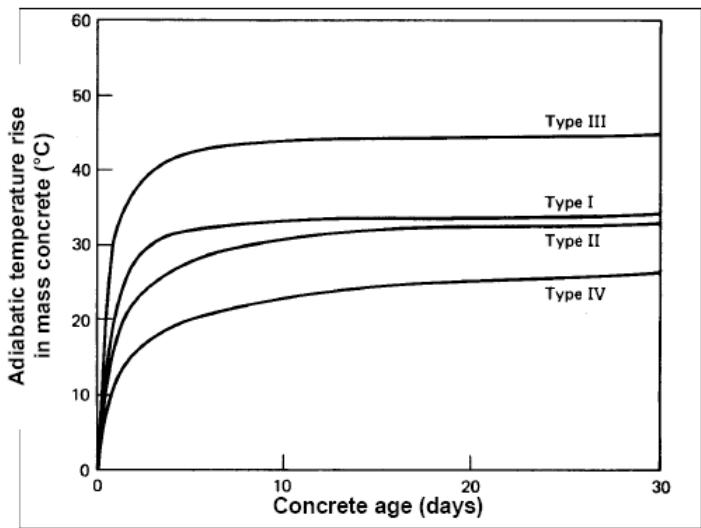
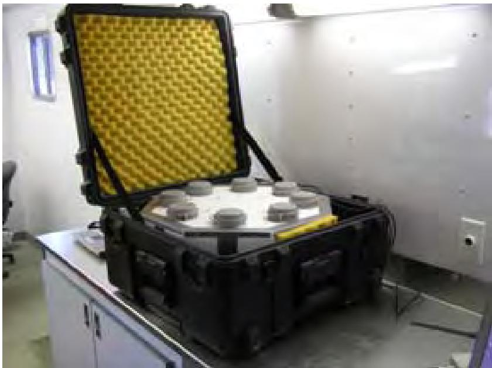
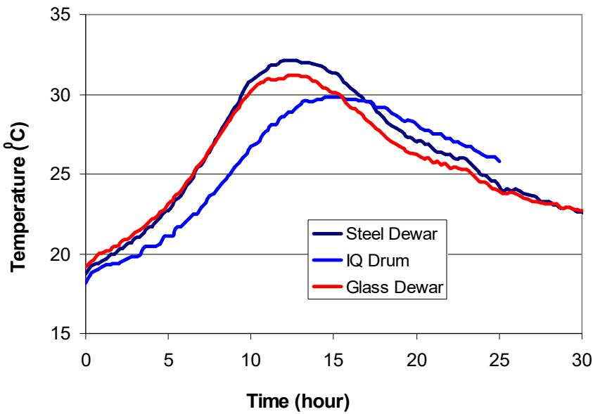
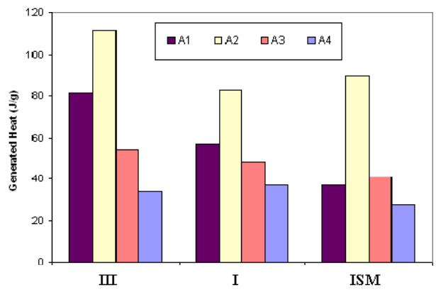
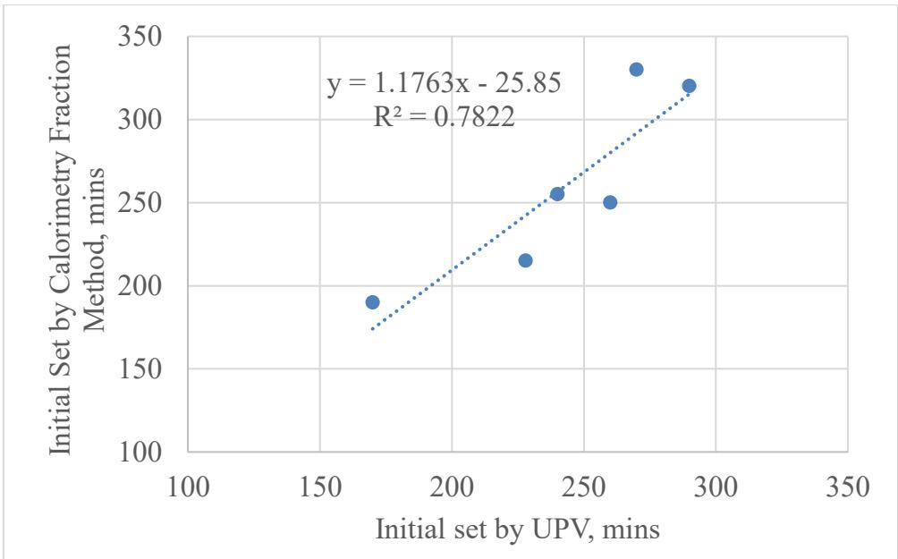
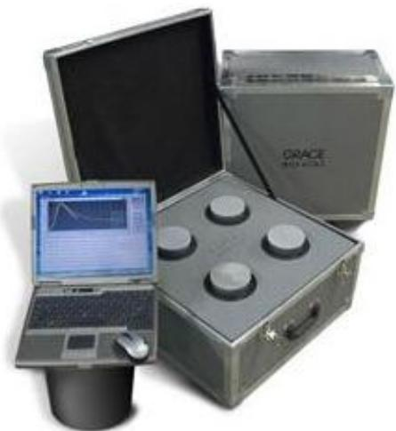
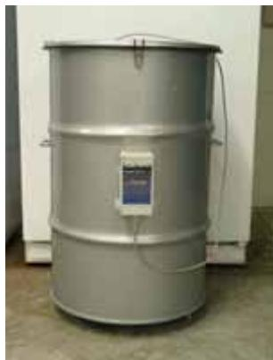
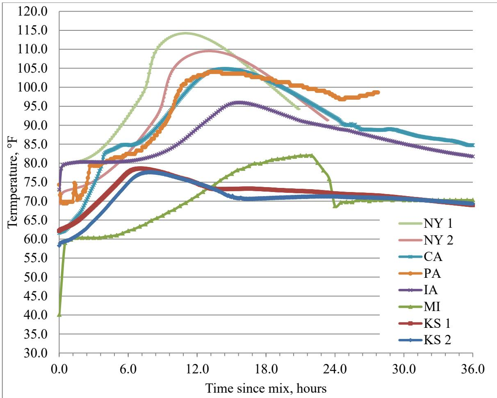

Semi-adiabatic Calorimeter
A Semi-adiabatic Calorimeter is a type of Calorimetry device that serves as a hybrid between isothermal and adiabatic testing methods [1]. It maintains thermal equilibrium by actively adjusting the chamber temperature to match the specimen’s internal heat generation, thereby minimizing but not entirely eliminating heat loss to the environment [3], allowing for the monitoring of heat evolution over time while accounting for temperature changes that occur in real structures [1]. This device is similar to an Adiabatic Calorimeter but allows a controlled amount of heat loss (maximum <100 J/(h·K)). The calculated adiabatic curve from a semi-adiabatic test is slightly lower than the true adiabatic curve [1]. Specific implementations include the Coffee Cup Test and Dewar Test, which differ primarily in their containment vessels, utilizing a simple cup versus an insulated vacuum flask respectively [1].
Sources (10)
Sub-concepts (2)
Overview and Scope
Widely used for determining the heat signature of concrete, semi-adiabatic calorimetry is employed to monitor hydration rates of concrete mixtures over a period of up to 72 hours [2]. The semi-adiabatic calorimeter test is generally completed in approximately 24 hours, which is quicker than the ASTM C 186 standard method [3].
 Effect of curing temperature on heat of hydration (Type I cement) [3]
Effect of curing temperature on heat of hydration (Type I cement) [3]
Testing Principles and Accuracy
According to the RILEM Round-Robin, semi-adiabatic mean temperature rises are 2–3% below adiabatic results and can adequately predict adiabatic temperature rise. In semi-adiabatic testing, the calculated adiabatic curve is consistently lower than the true adiabatic curve because the sample’s temperature development is reduced by the permitted heat loss to the environment [1]. The maximum allowable heat loss for a semi-adiabatic calorimeter is strictly defined as less than 100 J/(h·K), which distinguishes it from true adiabatic conditions where temperature loss must not exceed 0.02 K/h [1].

Temperature increase of mass concrete under adiabatic conditions (adapted from Mindess and Young 1981) [1]Alternatively, the Semi-adiabatic Calorimeter allows controlled heat loss (<100 J/(h·K)) and is widely used for field concrete heat signature testing; the magnitude of temperature peaks in semi-adiabatic calorimetry is influenced by the initial temperature, where a lower initial temperature extends the duration required for concrete to reach peak temperature, indicating that ambient conditions directly impact the thermal signature’s temporal characteristics [4].
 Calorimetry test device for measuring the heat of hydration of concrete [4]
Calorimetry test device for measuring the heat of hydration of concrete [4]
Calorimeter Types and Instrumentation
Most simple and inexpensive field calorimetry tests are semi-adiabatic, utilizing simple devices such as the Dewar Test, Coffee Cup Test, or a sprayed-foam basket. While adiabatic calorimeters typically use air, heated containers, or water for insulation—with water insulation being the most popular choice [3]—the AdiaCal calorimeter or similar equipment can be modified to compute temperature losses and inexpensively replicate the results of semi-adiabatic testing in the field [3]. Unthermostated heat conduction calorimeters operate on semi-isothermal principles and can quantify retardation and detect cement-admixture incompatibility by monitoring ambient temperature stability and heat capacity balance between samples and references [1].

AdiaCal calorimeter unit [3]
Temperature for samples in different dewar [1]The Coffee Cup Test is a simplified, low-cost instance of semi-adiabatic calorimetry that utilizes polystyrene foam insulation to approximate adiabatic conditions for small concrete specimens [1]. While ideal adiabatic testing requires expensive equipment to prevent heat loss, this hybrid approach provides critical feedback on hydration characteristics within 12 to 48 hours [1], [1]. This method allows for the practical investigation of cementitious materials and admixtures without the complexity of traditional laboratory setups [1].
The Dewar Test is an instance of semi-adiabatic calorimetry, a hybrid approach employed because conducting perfect adiabatic tests without delicate and expensive equipment is nearly impossible [1]. This method utilizes a vacuum-insulated flask to approximate adiabatic conditions by minimizing heat exchange with the ambient environment.
Standardized Procedures (ASTM C1753)
The ASTM C 1753 standard method provides a formalized procedure for conducting semi-adiabatic calorimetry tests on concrete [4]. This test is formally standardized under ASTM C1753, which outlines procedures alongside other fresh and hardened concrete property measurements [2]. Furthermore, the development of nonproprietary test standards for semi-adiabatic calorimetry aims to create procedures suitable for AASHTO adoption that are rugged enough for routine field quality control [5].
ASTM C 1679 is the standard specification governing semi-adiabatic calorimetry testing for concrete, which is widely utilized in field validation studies to measure heat of hydration [6].
 (a). Concrete temperatures versus time for heat of hydration [6]
(a). Concrete temperatures versus time for heat of hydration [6]
Heat Index Data Analysis
Heat indexes derived from the first derivative of the calorimeter curve and the area under the curve can characterize mortar features and predict early-age strength up to two days [3], as the area underneath the heat signature curve generated by a semi-adiabatic calorimeter indicates one-day strength gain of the cementitious material [6].

Heat indexes for different types of cement [3]Furthermore, the thermal profile generated by the calorimeter can be used to assess setting times of mixtures using specific temperature rise fractions, such as 20% and 50% [7]. Specifically, the initial set time of a concrete mixture can be predicted using the 20 percent fraction method applied to semi-adiabatic calorimetry curves, which correlates well with measurements obtained via ultrasonic pulse velocity [4].

Relationship of initial set derived from calorimetry fraction method and UPV [4]Applications in Cementitious Mixtures
Semi-adiabatic calorimetry test methods are suitable for paste, mortar, and concrete samples [3]. In rapid-set calcium sulfoaluminate (CSA) cement pastes, semi-adiabatic calorimetry reveals a sharp heat evolution peak without a dormant period, indicating very fast initial hydration and setting; however, the addition of citric acid as a retarding admixture shifts this peak to the right and extends the dormant period, delaying the onset of rapid heat generation [8]. For pastes containing citric acid retarders, semi-adiabatic tests show cumulative heat rising rapidly from approximately 25 J/g to 180 J/g between 5 and 10 hours after mixing, a rapid heat generation rate that is about twice that of conventional pavement cement pastes during the same period [8].
 Effect of cement type on heat of hydration [3]
Effect of cement type on heat of hydration [3]
Providing critical feedback within 12–48 hours, this method is used for investigating SCM and chemical admixture effects as well as cement-admixture compatibility. Semi-adiabatic calorimetry serves as an effective means to assess potential incompatibilities between mixture ingredients and flag changes in composition or behavior upon material delivery [6]. Furthermore, semi-adiabatic setups are utilized to quantify the actual specific heat capacity of construction materials, such as bulk slab specimens created for active overlays and pervious concrete shoulders [9]. Consequently, semi-adiabatic calorimetry is recommended as a supplementary laboratory method to site-placed heat measurements for monitoring the high initial hydration heat of rapid-set cements, a combination that helps assess thermal risks associated with materials like latex-modified calcium sulfoaluminate overlays [8].
 Adiacal calorimetry test equipment for heat of hydration of concrete [6]
Adiacal calorimetry test equipment for heat of hydration of concrete [6]
Field Validation and Deployment
Within the FHWA HIPERPAV® program, semi-adiabatic calorimetry is utilized to characterize the unique heat signature of concrete, representing the amount and rate of heat generated through the hydration process, which serves as a critical input for mix design systems and process quality control [5]. Semi-adiabatic tests performed on concrete samples provide higher accuracy in predicting pavement temperatures compared to isothermal tests because the semi-adiabatic condition of increased temperature more closely resembles in situ pavement conditions than constant temperature [10]. Unlike simple isothermal tests that clearly show a second heat evolution peak related to fly ash hydration, semi-adiabatic tests using devices like the AdiaCal or IQ drum generally do not observe this secondary peak [10]. Furthermore, semi-adiabatic calorimetry lacks the ability to identify changes in the water/cement ratio of field concrete, necessitating supplementary methods like microwave testing for such identification [10]. However, robust testing with semi-adiabatic devices demonstrates that varying water reducer or fly ash dosages by 50% shifts heat-generation curves left or right without indicating incompatibility at designed temperatures [10].
 Predicted pavement temperatures versus measurements (pavement top, Alma Center, WI ) [10]
Predicted pavement temperatures versus measurements (pavement top, Alma Center, WI ) [10]
The AdiaCal semi-adiabatic calorimeter (~$3,000, Solidus Integration, Massachusetts) was validated in FHWA Project 17 Phase II (wang-2007-simple-rapid-test-heat-evolution-phase2) with field tests in New York and South Dakota. Set times were determined via two methods: (1) derivatives — initial set = peak of second derivative, final set = peak of first derivative; and (2) fractions — initial set = 0.25×(peak-baseline), final set = 0.50×(peak-baseline). The fraction method more closely matched ASTM C 403 results, with channel variation <10.5% (typically 6–7%) [3]. FHWA Project 17 Phase III (wang-2008-simple-rapid-test-heat-evolution-phase3) validated the AdiaCal semi-adiabatic calorimeter at three concrete paving field sites using 27 concrete mixes, where the fractions method (initial set = 25% of peak-baseline, final set = 50%) correlated strongly with ASTM C403 penetration resistance set times (R² > 0.95 across all sites), leading to the recommendation of the AdiaCal as a practical field tool for set time prediction on paving projects [10]. In Phase III ternary mixtures field demonstrations (taylor-2012-ternary-mixtures-field-demo), semi-adiabatic calorimetry was deployed using an AdiaCal device at multiple field sites; recorded parameters across eight sites included peak temperatures (77.6°F–114.2°F), start temperatures (40.1°F–74.3°F), and time to peak (6.8–22.0 hours), and the method was recommended as an effective means of assessing potential incompatibilities between mixture ingredients and flagging changes in material composition on delivery [6].
 AdiaCal calorimeter [10]
AdiaCal calorimeter [10]
The AdiaCal calorimeter’s thermal set time results are highly sensitive to concrete placement temperature, causing significant variation in temperature curves even for samples tested on the same day [10], and a lower initial temperature during testing extends the duration required for the concrete to reach its peak temperature [4]. Peak temperatures recorded during semi-adiabatic calorimetry tests can reach approximately 105°F to 115°F, typically occurring between 14.6 and 22 hours after the start of testing [6]. Calorimetry tests conducted according to ASTM C 1679 are routinely performed alongside fresh concrete property measurements such as slump, unit weight, temperature, and air content [6]. Finally, the commercial semi-adiabatic calorimeter device is typically housed within a wooden frame to ensure stability during field testing [7].

AdiaCal calorimetry test equipment for heat of hydration of concrete [6]
Semi-adiabatic calorimeter–IQ drum (www.quadreliservice.com) [1]Quality Control Applications
Semi-adiabatic calorimetry serves as an effective screening tool for detecting potential ingredient incompatibilities and identifying compositional changes in delivered materials before they impact batch plant operations [6].

Calorimeter test results [6]Related
- Calorimetry
- Adiabatic Calorimeter
- Isothermal Calorimeter
- Heat of Hydration
- Coffee Cup Test
- Dewar Test
References
- K. Wang, Z. Ge, J. Grove, J. M. Ruiz, and R. Rasmussen, "Developing a Simple and Rapid Test for Monitoring the Heat Evolution of Concrete Mixtures (Phase 3)," CTRE, Iowa State University, Ames, IA, Rep. FHWA Project 17 (Phase I), 2006. [Online]. Available: https://www.intrans.iastate.edu/wp-content/uploads/2018/03/CalorimeterReportPhaseIII.pdf
- A. Daghighi, P. Taylor, H. Ceylan, and Y. Zhang, "Impacts of Internally Cured Concrete Paving on Contraction Joint Spacing Phase II," National Concrete Pavement Technology Center, Iowa State University, Ames, IA, Rep. TR-746, 2021. [Online]. Available: https://www.cptechcenter.org/wp-content/uploads/2021/05/IC_concrete_paving_impacts_phase_II_field_impl_w_cvr.pdf
- K. Wang, Z. Ge, J. Grove, J. M. Ruiz, R. Rasmussen, and T. Ferragut, "Simple and Rapid Test for Monitoring the Heat Evolution of Concrete Mixtures, Phase 2," Center for Transportation Research and Education, Ames, IA, 2007. [Online]. Available: https://www.intrans.iastate.edu/wp-content/uploads/2018/03/calorimeter.pdf
- X. Wang, P. Taylor, and D. King, "Evaluation of Modified Concrete Mixture Proportions for the City of West Des Moines," National Concrete Pavement Technology Center, Ames, IA, 2016. [Online]. Available: https://www.intrans.iastate.edu/wp-content/uploads/2018/03/WDM_modified_concrete_mixture_proportions_w_cvr.pdf
- D. Harrington, R. Rasmussen, D. Merritt, T. Cackler, and P. Taylor, "Long-Term Plan for Concrete Pavement Research and Technology—The Concrete Pavement Road Map (Second Generation): Volume II, Tracks (FHWA-HRT-11-070)," National Center for Concrete Pavement Technology, Iowa State University, Ames, IA, 2012. [Online]. Available: https://www.fhwa.dot.gov/publications/research/infrastructure/pavements/pccp/11070/11070.pdf
- P. Taylor, P. Tikalsky, K. Wang, G. Fick, and X. Wang, "Development of Performance Properties of Ternary Mixtures: Field Demonstrations and Project Summary," National Concrete Pavement Technology Center, Ames, IA, Rep. TPF-5(117), 2012. [Online]. Available: https://www.intrans.iastate.edu/wp-content/uploads/2018/03/ternary_final_w_cvr.pdf
- P. Taylor and X. Wang, "Comparison of Setting Time Measured Using Ultrasonic Wave Propagation with Saw-Cutting Times on Pavements," National Concrete Pavement Technology Center, Ames, IA, Rep. TR-675, 2015. [Online]. Available: https://www.intrans.iastate.edu/wp-content/uploads/2018/03/PCC_setting_time_and_joint_sawing_w_cvr.pdf
- K. Wang, B. M. Shankaramurthy, A. Anand, Y. Sargam, K. Freeseman, and B. Phares, "Performance Evaluation of Very Early Strength Latex-Modified Concrete (LMC-VE) Overlay," Institute for Transportation, Iowa State University, Ames, IA, Rep. TR-771, 2024. [Online]. Available: https://bec.iastate.edu/wp-content/uploads/2024/10/performance_evaluation_of_LMC-VE_overlay_w_cvr.pdf
- T. Cackler, J. Alleman, J. Kevern, and J. Sikkema, "Technology Demonstrations Project: Environmental Impact Benefits with "TX Active" Concrete Pavement (Missouri DOT Two-Lift Demonstration)," National Concrete Pavement Technology Center, Ames, IA, 2012. [Online]. Available: https://www.cptechcenter.org/research/completed/technology-demonstrations-project-environmental-impact-benefits-with-tx-active-concrete-pavement-in-missouri-dot-two-lift-highway-construction-demonstration/
- K. Wang, J. M. Ruiz, J. Hu, Z. Ge, Q. Xu, J. Grove, and R. Rasmussen, "Simple and Rapid Test for Monitoring the Heat Evolution ..., Phase III," National Concrete Pavement Technology Center, Ames, IA, 2008. [Online]. Available: https://www.intrans.iastate.edu/wp-content/uploads/2018/03/CalorimeterReportPhaseIII.pdf
Feedback on this page